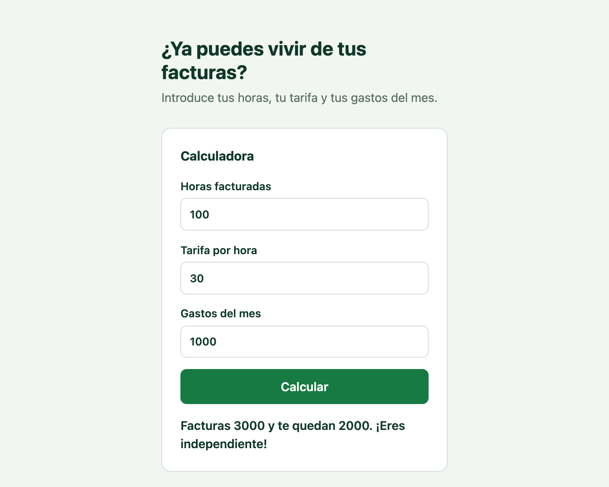

Setup en 2 semanas
Tests de API y de interfaz con Playwright sobre tus flujos críticos, corriendo en cada pull request desde el primer sprint.
Pruebas automatizadas y pipelines confiables para startups, listos en dos semanas, sin contratar un QA a tiempo completo.
Agenda 15 minutosUna llamada corta para ver tu stack y decirte por dónde empezar.
Trabajo sobre tu código y tu CI. Al terminar, todo queda en tu repo y tu equipo lo entiende.
Tests de API y de interfaz con Playwright sobre tus flujos críticos, corriendo en cada pull request desde el primer sprint.
Cuando un test falla, el pipeline comenta en el PR la causa probable y un arreglo concreto. Menos tiempo leyendo logs.
Tests nuevos para lo que lanzas, limpieza de tests inestables y un pipeline que sigue siendo rápido cuando el producto crece.
Un repositorio público con una app pequeña, sus tests y el pipeline completo. Incluye un pull request roto a propósito para ver el comentario de IA.

Soy Jorge, SDET con experiencia en QA Automation, CI/CD y delivery. He pasado años haciendo que equipos de producto lancen más seguido y con menos sustos.
GreenPipe es eso mismo, empaquetado para startups: llego, monto las pruebas y el pipeline que tu equipo necesita, y te lo dejo funcionando.
Cuéntame qué stack usas y qué se rompe más. En 15 minutos sabrás si puedo ayudarte.
Agenda 15 minutos